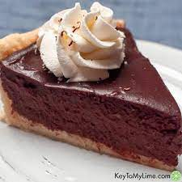

Chocolate Pie

The best chocolate pie you have never had!
This chocolate pie was created in a bakery in Asheville, North Carolina. It has been a staple dish for the bakery for over 65 years.
You can use this recipe when you want to wow your guests with an authentic tasting chocolate pie.
Ingredients
- 1 whole pie-crust, baked and cooled Use an Oreo or graham cracker crust for added flavor
- 1 1/2 c. sugar
- 1/4 c. cornstarch
- 1/4 tsp. salt
- 3 c. whole milk
- 4 whole egg yolks
- 6 1/2 oz. weight bittersweet chocolate chop finely
- 2 tsp. vanilla extract
- 2 tbsp. butter KerryGold
- whipped cream For Serving
Steps to Perfection
- Combine sugar, cornstarch, and salt in a medium saucepan and whisk together.
- Pour in milk and egg yolks, and whisk together.
- Stir over medium heat for 6-8 minutes.the second it starts to bubble,take it off the heat.
- Add the chocolate, vanilla, and butter, and stir until mixed well
- Pour the pudding into the pie crust and place in the fridge to chill for 4 hours.Be sure to save any extra pudding in small dishes!
- The only step left is to cut your pie into slices for you and your guests to enjoy!